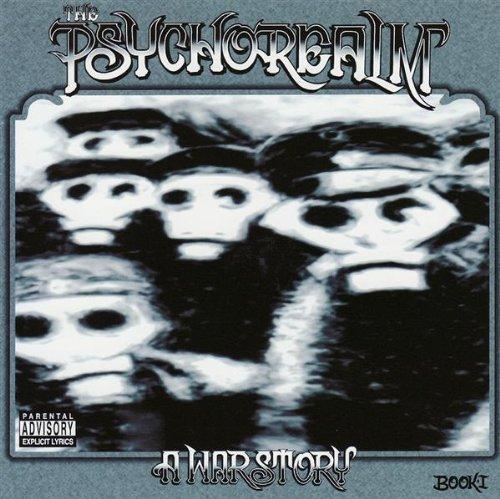
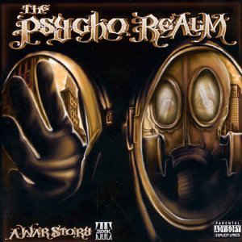

About:

"The Psycho Realm is an American hip hop group started in 1989 by brothers Sick Jacken (Jack Gonzalez) and Big
Duke (Gustavo Gonzalez) from the Downtown, Pico-Union area of Los Angeles. The first recorded Psycho Realm
song, "Scandalous", was released on the soundtrack of the film Mi Vida Loca in 1994. That same year B-Real
of the rap group Cypress Hill saw Psycho Realm performing at Olvera Street for an End Barrio Warfare concert.
Their performance inspired B-Real to the point that he wanted to join the group. With this time period being
the height of Cypress Hill’s career anything Cypress Hill related would get major publicity. In 1997 Sony
released the first Psycho Realm album, labeled as an addition to the Cypress Hill Family by the sticker placed
on the CD case. Due to conflicts with the record label the Gonzalez brothers were dropped from Sony as Jacken
explains, "the machine was just trying to censor me / Didn't do it for Sony so they ended up releasing me
/ Independent, no longer locked down for an infinity / So my vicinity stays true to my identity." The brothers
then went on to form Sick Symphonies, their own record label, which lacked the big budget for promotion and
distribution in chain stores along with group member B-Real, who was stuck on his contract with Sony for
Cypress Hill."
Press this link to view source.
What is the "Sick Side"?

"The Sick Side Army Is Not A Gang, Crew, Set Or A Bunch!!! We Are Universal Street Soldiers United Together As One Under The S.S. Flag. (Sick Symphonies/Sick Side). We Are Driven By The Sounds, Beats And Lyrics Of The Psycho Realm And Street Platoon Under The Label Sick Symphonies. The Sick Side (S.S.) Meaning We Are Not From The South Side, North Side, East Or West Side. Is An Idea And Concept Born In The Streets Of The Pico-Union District Of Downtown Los Angeles To Unify Our People Meaning, All People Living In A World Divided By Gangs, Drugs, Prostitution And Crooked Cops To Come Together As One Unit. The Lyrics & Hip Hop Beats Written And Performed By Big Duke, Sick Jacken, DJ F.M., Cynic and Crow Soto, Carries A Message To All Street Soldiers From All Neighborhoods To Put On The Gasmask To Keep Our Minds Clean Of This Negativity And Fight Together As One To Overcome And Win This War Aimed To Destroy Our People. The Sick Side Movement Lives And Channels Through S.S. Street Music And The Sick Side Army Are The People Who Represent The Movement. There Is No Initiation Or Ritual To Join The Sick Side Army. We Are Simply Hip Hop Heads Down For A Cause Under A Name. Anyone Who Wants To Join Can Do So Without Even Informing Another Member, The Fight Starts In Our Minds So If You Are Already Relating To This Idea And You’re Willing To Stand For It Even If It’s Just In Your Mind, Then Your Already A SICK SIDE SOLDIER. Listen To A CD By The Psycho Realm, Street Platoon, And Sick Symphonies, Check Out The Music Pages, Come To A Show, Wear A T-shirt, Add Us To Your Friends List, Let People Know About The Sick Side Movement. If You Want To Take It A Step Further As Some Of Us Soldiers Have And Get A Tattoo Of The Gasmask Logo To Represent This Movement Of Unity Then You Are Welcomed To Do So. If You Want To Add "Of The Sick Side Army" To Your Nickname Go For It!!! None Of Us Were Asked Or Forced To Do Any Of It, We All Did It Because We Believe In Such An Idea And We Are Down For The Movement. The Greatest Reward Of Being A Sick Side Soldier I Would Have To Say Is When You Connect With Soldiers From Different Neighborhoods, Cities, States, Countries And Continents And You Automatically Feel That Bond And Unity. So Go Ahead And Check Out The Movement Through The Music. These Are Not Fabricated Lies To Sell Records And It’s Not A Claim To Fame, This Is A Fight Againts Those Who Try To Destroy Our Minds!!!"
Press this link to view source
Albums:
"The Psycho Realm" (1997)

- Psycho City Blocks/Psycho Interlude
- Showdown
- The Big Payback
- Premonitions
- Interlude/Stone Garden/Interlude
- Temporary Insanity
- Doors Intro/Confessions of a Drug Addict
- Who Are You Interlude/Bullets
- Love Letters Intro/Love from the Sick Side
- R.U. Experienced/Outro
- Psyclones
- Lost Cities
- La Conecta Intro/La Conecta (Pt. 1)
- La Conecta (Pt. 2)/Goin' In Circles Outro
"A War Story Book I" (1999)
- The Crazy Area
- Order Through Chaos
- Pico-Union District
- Enemy of the State
- Conspiracy Theories
- Tragedy.Com
- Earthquake Weather
- The Wind of Revolution
- Moving Through Streets
- Sick Dogs
- Show of Force
"A War Story Book II" (2003)
- Street Terrorism
- The Enemy Strikes Back
- Wasted
- The Killing Fields feat. Street Platoon
- Art of Execution
- Palace of Exile
- First Day of Freedom
- Poison Rituals (Pow Wow)
- Unknown Soldier
- Soul Sacrifice
- Dysfunctional
- Good Times
- Lifestyle
- Concrete Jungles feat. Crow(of Street Platoon)
- Gun Control feat. Cynic(of Street Platoon)
"Psycho Realm and Street Platoon Present... Sick Symphonies: Sickside Stories" (2005)

- The Beginning Intro
- Cointelpro
- #1 Target
- Tax Evaders
- Ghetto Sport
- In This Lifetime
- Times We're Living In
- If It Happened To You
- F**kin' Robots
- SS International
- I Can't
- Black Hole
- Reason To Fight
- Streets Up